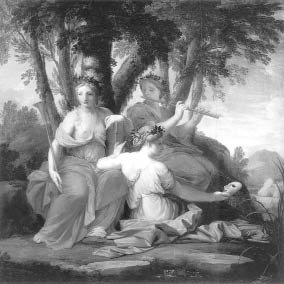

Musalar
Tanrı Apollon, ilk gördüğünde vurulduğu perikızı güzel Kirene'yi Libya'ya kaçırdı ve orada yaşadıkları kaçak aşklarından Aristayos (Aristaios) adını verdikleri nur topu gibi bir oğlan çocukları oldu. Sonra da onu bakıp yetiştirmeleri için teyzeleri olan ve Nümfa (Nympha) denen perikızlarına verdiler. Tanrıların ölümsüzlükle ödüllendirdiği Aristayos'u, el bebek gül bebek büyüttü perikızları... Bu arada Kentaurlar denen Atadamlar da ona arıcılığı ve zeytinciliği öğrettiler. Esinperileri güzel Musa'lar; ezgiler söylemesini, şiirler üretmesini öğrettiler; ayrıca hastalıkları iyileştirme ve geleceği görme gibi yetenekler de bağışladılar ona. Aristayos, bu öğrendiklerinin hepsini de Akdenizli halklara bir bir aktarmaya başladı. Ayrıca yağ çıkarmaya yarayan zeytin sıkma aygıtı yapmayı, sürülere dadanan yırtıcı hayvanlara karşı kurulacak tuzakları hep o öğretti çiftçilere, çobanlara... O yüzden çobanlığın, avcılığın, doğal bitkilerle hastalıkları iyileştirmenin tanrısı gibiydi artık Aristayos... Sonra birçok arı kovanları vardı onun. Zaten balcılık sanatını da Akdeniz coğrafyasındaki halklara o öğretti.
Bir gün tanrı Diyonisos'un ürettiği şarapla Aristayos'un ürettiği bal arasında bir yarışma düzenlendi tanrılar önünde. Şarap, baldan çok daha fazla etkileyip büyüledi tanrıları! Haliyle yitirdiği bu yarışmanın sonucundan hiç gocunmadı Aristayos. Bundan sonra balcılığının yanına şarapçılık sanatını da ekleyip işin içinden sıyrıldı...
Sık sık dağlarda bayırlarda gezip tozmakla, babası tanrı Apollon'dan ve esinperileri Musa'lardan öğrendiği şiir düzme ve şarkı söyleme sanatını çok daha geliştirmeye çalışmakla geçiriyordu günlerinin çoğunu... Bu gezintileri sırasında önüne çıkan perikızlarını kovalayıp onları yakalamaya çalışmaktan da çok hoşlanıyordu... Bir gün hiç tanımadığı ünlü müzisyen Orfeus'un sevgilisi Euridike çıktı karşısına... Bir Nümfa olan ve Orfeus'tan başka kimselere yüz gönül vermeyen güzeller güzeli Euridike de, aniden karşısına çıkan Aristayos'un niyetini hemen sezinledi. Can havliyle kaçmaya başladı ondan. Aristayos da haliyle ardına düştü... Bu koşu sırasında Euridike, çiçeklerin arasına büzülüp çöreklenmiş bir engerek yılanının üstüne basıverdi! Canı yanan yılanın sokmasıyla da hemen oracıkta son soluğunu verip tanrı Hades'in ülkesini boyladı! Bu olaya çok üzülen ve teyzeleri olan perikızları, haşarı Aristayos'u cezalandırmak için onun kovanlarındaki bütün balarılarını yok ettiler!.. Haliyle büyük bir yasa bürünen Euridike'nin müzisyen sevgilisi Orfeus da, kimselerin girip çıkamadığı Ölüler Ülkesi'ne gidip ezgilerinin gücüyle, oranın acımasız tanrıları Hades'i ve karısı Persefone'yi yumuşattı... Sonu başarısız da olsa, oradan Euridike'sini yeniden dünyaya getirme iznini kopardı...
Bu arada Aristayos'un anası Kirene, bu olay yüzünden saygınlığını ve varsıllığını yitiren oğluna, Delfoy tapınağındaki biliciye gidip akıl danışmasını öğütledi. Başvurduğu tapınaktaki ünlü bilici de ona, bütün bu başına gelenlerin, ölümüne neden olduğu Euridike'den kaynaklandığını söyledi. Orfeus'u ve karısını onurlandırmak üzere dört düve ve dört dana kurban etmesini öğütledi... Bu öneri üzerine Aristayos'un kurban ettiği hayvanların bağırsaklarından, yeri göğü bulut kümeleri gibi saran balarıları türedi... Bundan sonra ünü yeniden yayılmaya başlayan Aristayos, bir gün babası Apollon'un önerisiyle, Keos adasındaki veba salgınını önledi. Bu olaydan birkaç yıl sonra da, anavatanı Libya'ya döndü. Buradaki hemşehrilerine son öğrendiklerini aktardı. Sonra Sicilya adasına geçti. Ne var ki bu adadaki topraklar kurak ve çoraktı; haliyle halk da çok yoksuldu... Hemen oranın halkını zeytinle ve çeşitli meyve ağaçlarıyla tanıştırdı. Zeytinin meyvelerinden yağ çıkarmasını, üzümün suyundan şarap kurmasını öğretti... Sonra da üzüm ve şarabın tanrısı Diyonisos'un çağrısı üzerine, Trakya bölgesine geçti. Aristayos; Diyonisos'tan bağcılık üzerine öğrendiklerini ve babası tanrı Apollon'dan kaptığı şiir ve musiki sanatını; bu bölgedeki insanlara da aktardı. Böylece zaten üretime susamış olan toprak ve iklimle tanışıp kaynaşan insanlar, şiir ve musikinin eşliğinde el ele ekip biçmeye, ürettiklerini kardeşçe bölüşüp barış ve bolluk içinde yaşamaya başladılar...
Bir gün Trakya bölgesindeki çiftçilere gene böyle uygulamalı tarım dersleri verirken, az ötedeki tepelerin birinden bir ses duyduğunu söyledi Aristayos... Ama kimseler böyle bir ses duymamıştı! Az sonra geri geleceğini söyleyip koşar adım tepelere doğru tırmanmaya başladı Aristayos... Bir süre sonra da, bir daha geri dönmemek üzere gözlerden uzaklaşıp gitti...
Ne var ki gerek Trakya'daki, gerekse gittiği bütün Akdeniz ülkelerindeki savaş yorgunu mazlum ve kardeş halklar; el ele üretip kardeşçe bölüşmeyi ve savaşsız bir dünyanın güzelliğini öğretmeye çalışan Aristayos'u, ta o zamandan beri, hep geri gelecek bir Tanrı olarak algıladılar... Ve onu çok büyük ve de aralıksız bir hasretle hep bekleyegeldiler...